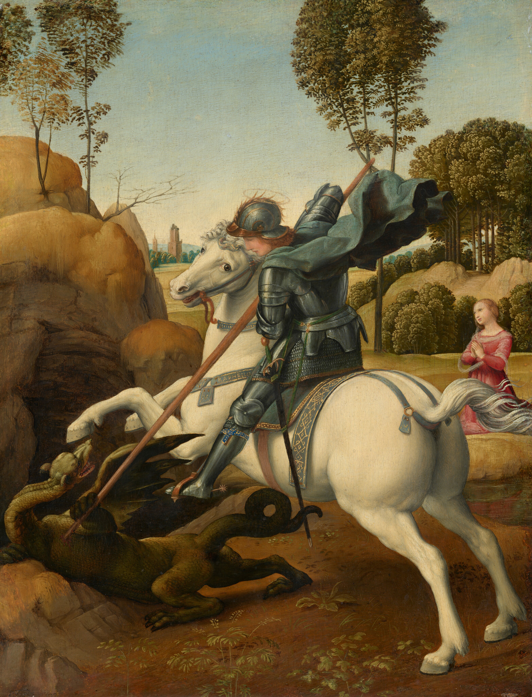

Rites of Passage

Integrate the boy, become the man.
For young men seeking:
- Structure and guidance
- Purpose and direction
- Challenge and growth
- Community and relatedness
- Discipline and resilience
Meaning

Re-align, re-engage, resonate.
For those feeling:
- Numb to everything
- Like the world has no meaning
- Disconnected from life
- Burned out
- Stuck and unmotivated